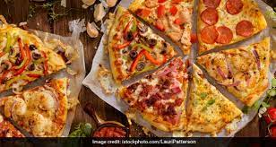

Burger is a delicious food.Yap my making burger,if you eat you cannot remember the taste.
This burger is called a quarter pounder with cheese. How many can you get out of a pound of meat.
Grilling burgers for a party, Cookout crowd, tailgate party, a Superbowl or memorial day weekend is an
ideal way to make your guests happy and satisfied with good food, especially if served with coolers,
special sauces, and side dishes.

Pizza is one of the most sought-after dishes of Italian cuisine and is one of the easy dishes that you
can prepare at home for your loved ones. The only setback is - making the perfect pizza base. Not
everyone can make it. However, in this easy recipe, we give you step-by-step details on how to make a
pizza using the fresh pizza base. Though you can buy a pizza base from the nearest superstore or market,
the real taste of a pizza will only come when you make a fresh pizza.

Ice cream is a sweetened frozen food typically eaten as a snack or dessert. It may be made from milk or
cream and is flavoured with a sweetener, either sugar or an alternative, and a spice, such as cocoa or
vanilla, or with fruit such as strawberries or peaches. It can also be made by whisking a flavored cream
base and liquid nitrogen together. Food coloring is sometimes added, in addition to stabilizers.